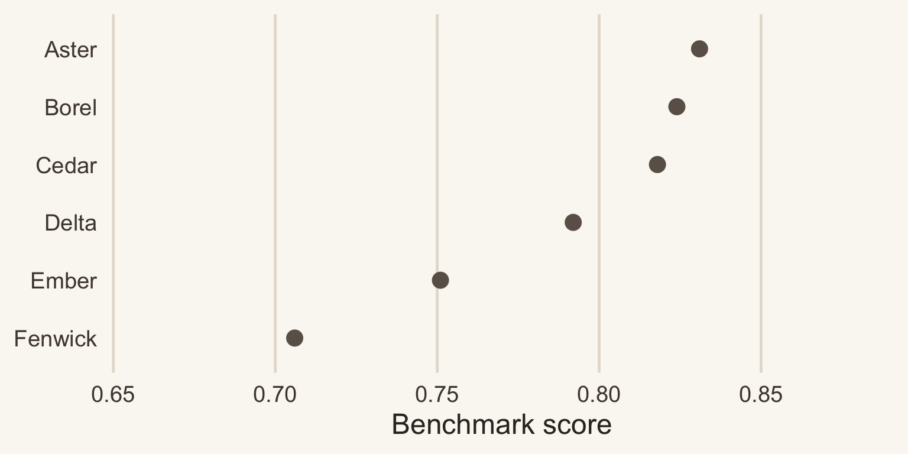
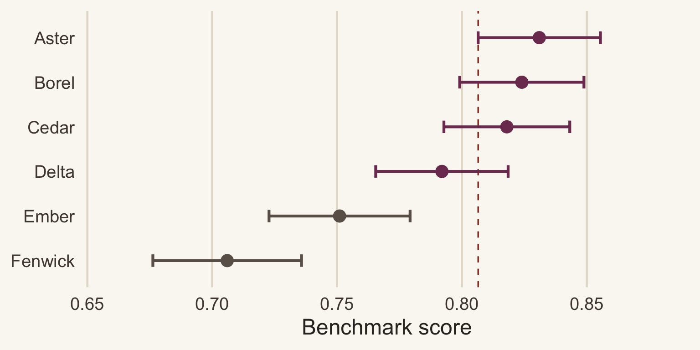
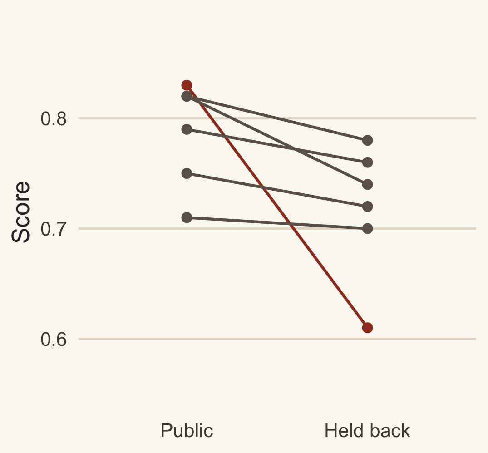
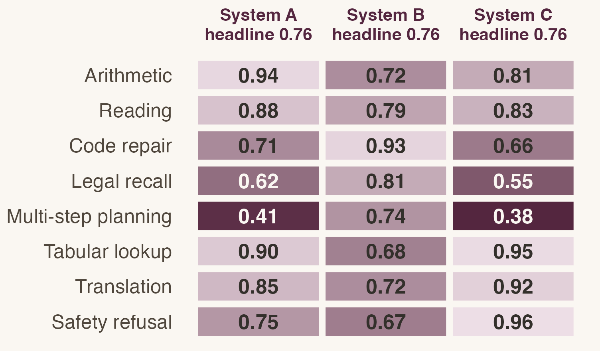

AI and Managerial Decisions, Week 3. An AI-generated example lecture.
September 15, 2026
Last week we separated the prediction from the decision it feeds, and the loss function turned out to do most of the work.
So A vendor tells you their system scores 0.83 on the industry benchmark and the incumbent scores 0.79. What have you learned?
Vendor A scores 0.83. It is strong on arithmetic and weak on anything requiring several steps.
Vendor B scores 0.79. It is even across every task family, with no sharp weakness.
Key idea The ranking is 0.04 wide. Your workload is not the benchmark, and the gap between these two systems on your traffic is not 0.04.
Building one is its own research problem (Gao et al. 2025).
Definition A benchmark is a fixed set of \(n\) items drawn from some distribution \(\mathcal{D}\), scored by a rule that returns 1 for a pass and 0 for a fail.
Example 900 exam questions with published answer keys, graded by string match. \(\mathcal{D}\) is “questions someone thought worth writing down in 2023”.
\[\widehat{S}= \frac{1}{n}\sum_{i=1}^{n} \mathbf{1}\{\text{item } i \text{ passes}\}, \qquad \operatorname{se}(\widehat{S}) = \sqrt{\frac{S(1-S)}{n}}\]
The same arithmetic is why field measurements of AI at work report intervals rather than a single number (Brynjolfsson et al. 2025; Wiles et al. 2025). The derivation is in the appendix.
Six systems, 900 items each. Read as a ranking, the order looks settled.


Plum marks every system whose interval overlaps the leader’s. The top four are a tie.
\(0.83 \pm 0.025\)
\(n = 900\) items. The gap to the incumbent disappears inside it.
\(0.83 \pm 0.006\)
\(n = 15{,}000\) items. Now a 0.04 gap is real, and it cost sixteen times the grading budget.
Theorem 1 Grade A and B on the same \(n\) items from \(\mathcal{D}\). Let \(p_{10}\) be the chance A passes where B fails, \(p_{01}\) the reverse, and \(\Delta = p_{10} - p_{01}\). Then \[\operatorname{se}(\widehat{S}_A - \widehat{S}_B) = \sqrt{\frac{p_{10} + p_{01} - \Delta^2}{n}}.\]
Items both systems pass drop out, and so do items both fail. At 0.83 against 0.79 on 900 shared items with 12% disagreement the standard error is 0.011, so the gap runs 3.5 standard errors wide.
A leaderboard publishes two marginal scores, so overlap is all you can draw. The paired standard error is derived in the appendix.
You can spend the evaluation budget on 15,000 public benchmark items or on 900 items sampled from last quarter’s real customer tickets. Which do you buy, and what does the other one still get you?
| Failure mode | What it does to \(\widehat{S}\) | Benchmark | Your traffic |
|---|---|---|---|
| Contamination | inflates it | 0.83 | 0.61 |
| Distribution gap | either direction | 0.83 | 0.74 |
| Goodhart drift | inflates it over time | 0.83 | 0.79 |
Only the second one is a statistics problem. The other two are incentive problems, and no amount of extra items fixes them. Item families make the first column worse still; what that clustering does to the interval is worked out in the appendix. On building the measure before trusting it, see Golder et al. (2023).

Watch out Rewrite the items and one system loses 0.22 while the rest hold. It memorized the answer key.
We will do this live in the notebook. Three lines is the whole idea.
The rubric is the hard part, not the sampling. Two graders disagreeing on 8% of items puts a floor under how small your interval can honestly get. Where the features being graded come from is a live question (Grewal et al. 2021; Feng et al. 2023), and so is whether a model can propose the hypothesis as well as test it (Ludwig and Mullainathan 2024; Banker et al. 2024).
Commit, then argue Vendor C scores 0.96 on the public benchmark, up from 0.71 last year, on a benchmark that has not changed. Write down one number you would ask for before believing it.
Commit, then argue Vendor C scores 0.96, up from 0.71 on an unchanged benchmark.
One good answer The score on a rewritten version of the same items. If 0.96 survives a paraphrase, it is capability. If it falls to 0.72, the benchmark leaked into training.

Key idea Ask for three things: the item count behind the score, the interval that count implies, and a score on items the vendor has never seen.
Next week: where the labels come from, and who is paid to make them.
Whether anyone acts on the number is a separate problem (Dietvorst et al. 2018), and tailoring a system to your own traffic rather than to a benchmark is an active line of work (Yin et al. 2024).
Read Golder et al. (2023), pages 319–326, and bring one sentence on what they would want measured before a number is believed.
Problem set 2: redo tonight’s interval at \(n = 150\) and at \(n = 15{,}000\), and say which pairs on the leaderboard stay separated at each. Due Monday, 6pm.
Pull 40 items off a queue your team actually answers and write the rubric you would grade them with. One page is enough.
Bring the rubric even if you hate it. It is what we build on next week.
Nobody writes a usable rubric on the first pass. Two graders disagreeing on 8% of items is the ordinary starting point, and arguing about that 8% is the exercise.
The 1.96 is the normal approximation. It is fine at \(n = 900\) and wrong at \(n = 20\), where you want the exact binomial interval.
Proof (of Theorem 1). Write \(D_i = X_i - Y_i\) for the difference of the two pass indicators on item \(i\). It is \(+1\) where A passes and B fails, \(-1\) where B passes and A fails, and 0 otherwise, so \(\mathbb{E}[D_i] = p_{10} - p_{01} = \Delta\). Since \(D_i^2\) is 1 exactly on a disagreement, \(\mathbb{E}[D_i^2] = p_{10} + p_{01}\) and \(\operatorname{var}(D_i) = p_{10} + p_{01} - \Delta^2\). The difference in scores is the mean of \(n\) independent draws of \(D_i\), which divides that variance by \(n\).
Substitute the sample disagreement shares to use it. This beats the unpaired \(\sqrt{\operatorname{se}(\widehat{S}_A)^2 + \operatorname{se}(\widehat{S}_B)^2}\) whenever the two systems pass the same items more often than independence predicts, which on a shared benchmark is always.
Benchmark items arrive in families built from one template, so the effective sample size is smaller than the item count.
| Design | Items | Effective \(n\) | 95% half-width |
|---|---|---|---|
| Independent items | 900 | 900 | 0.025 |
| 30 templates, 30 variants each, \(\rho = 0.2\) | 900 | 130 | 0.065 |
Cluster on the template, not the item. A published score almost never does, which is one more reason the leaderboard gap is narrower than it looks.
Watch out Halving the interval costs four times the items, and grader disagreement puts a floor under it that no item count clears.
Two graders disagreeing on 8% of items hold the honest half-width near 0.02. Past that, more items buy precision about the benchmark rather than about your own traffic.
Looking inside the model instead of scoring its outputs is the other route, and it has the same measurement problem one level down (Cunningham et al. 2023; Templeton et al. 2024).